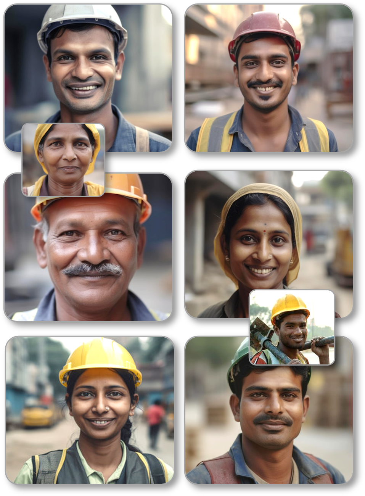

Welcome to the BOCW discussion forum: This platform is dedicated to fostering a transformative space for BOCW Board Officers and authorized personnel, enabling them to engage in meaningful online discussions and idea sharing focused on the welfare of building and construction workers across India. At the heart of this website lies a shared vision - to enhance the lives of those who contribute to the very infrastructure that shapes our nation.
Empowering Positive Change: In the dynamic landscape of labor welfare, this website stands as a pivotal tool for officers seeking innovative solutions and collective wisdom. With a diverse array of topics ranging from worker safety and healthcare to skill development and legal frameworks, this platform catalyzes the co-creation of impactful strategies. Our collaborative environment encourages officers to share their experiences, best practices, and insights, fostering a community-driven approach to labor welfare enhancement.
Data Privacy: All participating officers must understand the sensitivity of the information exchanged on this platform and consider privacy with utmost importance. All data uploaded and information entered on this website is stored securely in Karnataka State Data Center (KSDC) server. This platform must be used keeping in mind the purpose and vision of this website.
Thank you for joining us in this collective endeavor to shape a brighter future for our nation's invaluable building and construction workforce. Together, we are not just constructing physical structures, but also building a foundation of well-being, equity, and progress.
